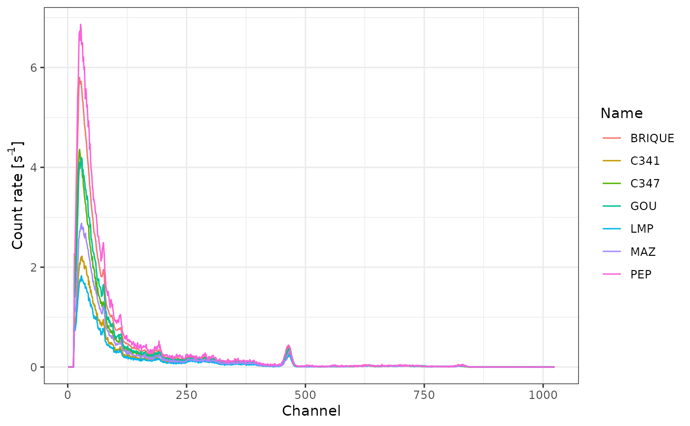
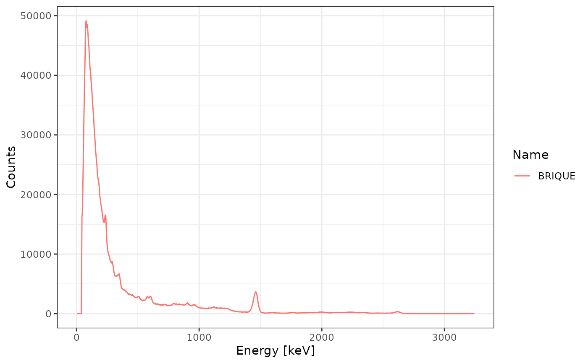
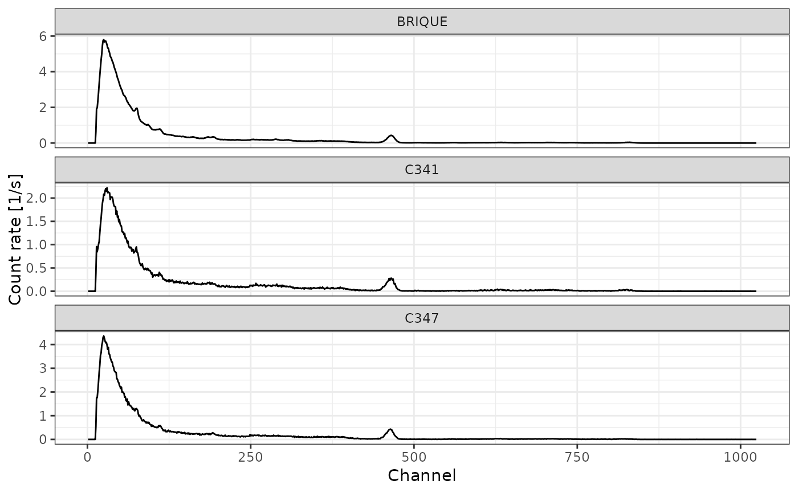

Plot
Usage
# S4 method for class 'GammaSpectrum,missing'
plot(x, xaxis = c("channel", "energy"), yaxis = c("count", "rate"), ...)
# S4 method for class 'GammaSpectrum,Baseline'
plot(x, y, xaxis = c("channel", "energy"), yaxis = c("count", "rate"), ...)
# S4 method for class 'GammaSpectra,missing'
plot(
x,
xaxis = c("channel", "energy"),
yaxis = c("count", "rate"),
select = NULL,
facet = FALSE,
nrow = c("fixed", "auto")
)
# S4 method for class 'GammaSpectrum,PeakPosition'
plot(x, y, split = FALSE, span = 25)
# S4 method for class 'CalibrationCurve,missing'
plot(
x,
error_ellipse = TRUE,
error_bar = FALSE,
energy = FALSE,
level = 0.95,
n = 50,
...
)Arguments
- x, y
Objects to be plotted.
- xaxis, yaxis
A
characterstring specifying the data to be plotted along each axis. It must be one of "energy" or "channel" (xaxis) and "counts" or "rate" (yaxis). Any unambiguous substring can be given.- ...
Currently not used.
- select
A
numericorcharactervector giving the selection of the spectrum that are drawn.- facet
A
logicalscalar: should a matrix of panels defined by spectrum be drawn?- nrow
A
characterstring specifying the number of rows. It must be one of "fixed" or "auto". Any unambiguous substring can be given. Only used iffacetisTRUE.- split
A
logicalscalar: should.- span
An
integergiving the half window size (in number of channels). Only used ifsplitisTRUE.- error_ellipse
A
logicalscalar: should error ellipses be plotted?- error_bar
A
logicalscalar: should error bars be plotted?- energy
A
logicalscalar plotting the count threshold value or the energy threshold value- level
length-one
numericvector giving the the probability cutoff for the error ellipses.- n
A length-one
numericvector giving the resolution of the error ellipses.
Value
A ggplot2::ggplot object.
Examples
# Import CNF files
spc_dir <- system.file("extdata/BDX_LaBr_1/calibration", package = "gamma")
spc <- read(spc_dir)
# Plot all spectra
plot(spc, yaxis = "rate", facet = FALSE) +
ggplot2::theme_bw()

# Plot the spectrum named 'BRIQUE'
plot(spc, xaxis = "energy", yaxis = "count", select = "BRIQUE") +
ggplot2::theme_bw()

# Plot the first three spectra
plot(spc, xaxis = "channel", yaxis = "rate", select = 1:3, facet = TRUE) +
ggplot2::theme_bw()
